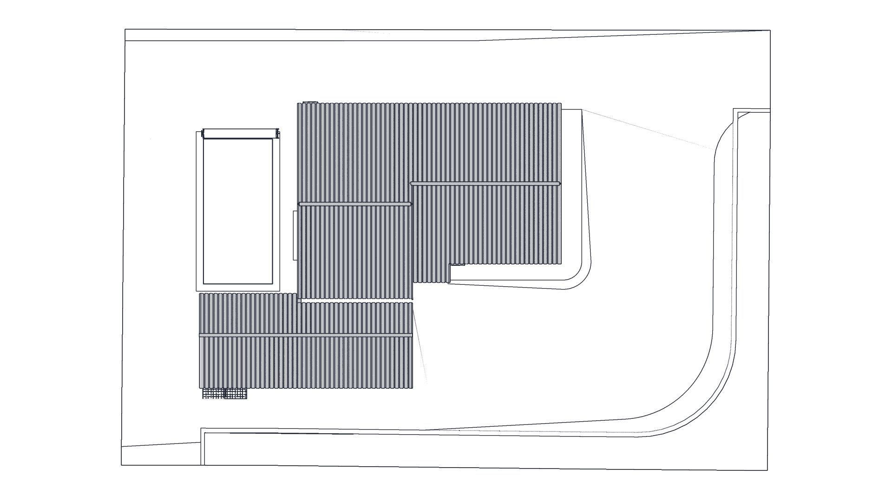
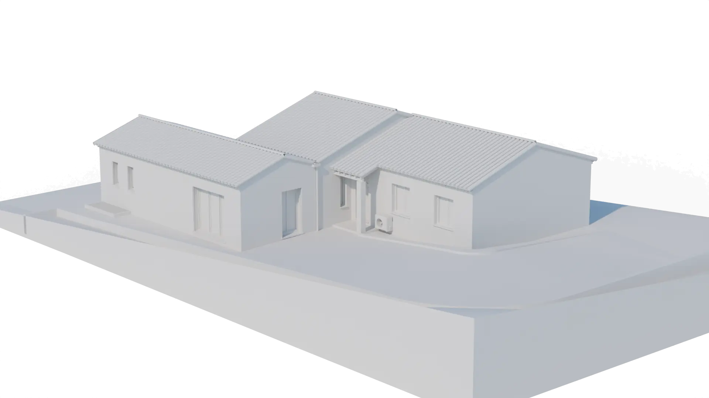
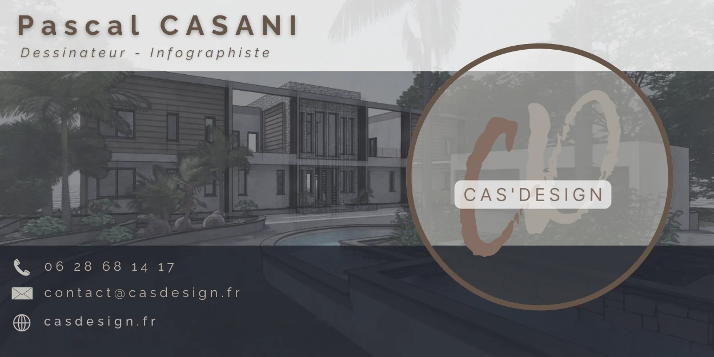

Dessinateur · Infographiste — Sisteron, Alpes-de-Haute-Provence
Du premier trait à la dernière lumière.
Plans, modélisation 3D et images de synthèse : je donne forme à votre projet de construction, d'extension ou de rénovation — avant qu'il n'existe.
-
01
Le trait
Relevé, esquisse, plans cotés. Tout projet commence ici : une emprise, des cotes, une orientation.
-
02
Le volume
La modélisation 3D donne corps au plan. On tourne autour, on ajuste les proportions, on valide.
-
03
La matière
Tuiles, enduits, pierre, eau : matériaux et lumière révèlent le projet tel qu'il sera.
02Le métier
Avant les murs, il y a un trait. Avant le trait, une envie : une pièce en plus, une terrasse au soleil, une maison qui vous ressemble. Mon métier est de traduire cette envie en plans précis et en images fidèles — pour décider sereinement, déposer un dossier solide et construire sans surprise.
Pascal CasaniDessinateur · Infographiste
03Prestations
Six façons de donner forme à votre projet.
Du simple plan pour une déclaration préalable à la maquette 3D complète, chaque prestation s'adapte à votre projet et à son avancement.
-
01
Permis de construire
Plan de masse, plans de niveaux, coupes, façades, notice et insertion : un dossier complet, prêt à déposer en mairie.
Dossier -
02
Déclaration préalable
Extension, piscine, abri, clôture, modification de façade : les plans et pièces graphiques qu'il vous faut.
Dossier -
03
Modélisation 3D
Votre maison en volume, à l'échelle. On visite, on compare les variantes, on corrige avant le chantier.
3D -
04
Images de synthèse
Perspectives réalistes, matériaux et ambiances : de quoi vous projeter — et convaincre.
Image -
05
Étude d'ensoleillement
Ombres portées heure par heure, saison par saison, pour placer une terrasse, une piscine, une baie vitrée.
3D -
06
Relevé & plans de l'existant
Mesures sur place et mise au propre de votre bâti : la base fiable de toute rénovation.
Plans
04Les planches
Un dossier, planche après planche.
Chaque pièce graphique répond à une exigence précise du dossier d'urbanisme. Ici, celles d'une maison individuelle avec piscine.
05À vous de jouer
Faites glisser : du trait à la matière.


Trait
06Étude d'ensoleillement
Une journée de soleil, en un geste.
La maquette 3D rejoue la course du soleil sur votre terrain. On sait où tombera l'ombre du pignon en fin d'après-midi, quelle pièce prendra la lumière du matin — avant de couler la dalle.
07La démarche
Cinq étapes, un seul interlocuteur.
- 01
Premier échange
On parle de votre projet, de votre terrain, de vos envies et de votre budget. Sans engagement.
- 02
Relevé & esquisse
Mesures, règles d'urbanisme, premières intentions : le projet prend ses marques sur le papier.
- 03
Maquette 3D
Le projet passe en volume. Vous le voyez sous tous les angles et nous l'ajustons ensemble.
- 04
Plans & dossier
Mise au net des plans, pièces graphiques et écrites : le dossier est prêt à être déposé.
- 05
Dépôt & suivi
Je reste à vos côtés pendant l'instruction, pour répondre aux demandes éventuelles de la mairie.
08Questions fréquentes
Avant de se lancer.
Dois-je passer par un architecte ?
Pas toujours. Pour une maison individuelle, le recours à un architecte n'est obligatoire qu'au-delà de 150 m² de surface de plancher. En dessous, un dessinateur peut concevoir vos plans et constituer votre dossier.
Permis de construire ou déclaration préalable ?
Tout dépend de la nature du projet, de sa surface et des règles d'urbanisme de votre commune. On le vérifie ensemble dès le premier échange, avant de dessiner quoi que ce soit.
À quoi sert une maquette 3D si j'ai déjà des plans ?
À voir ce que les plans ne montrent pas : les proportions réelles, les vues depuis le jardin, l'ombre d'un pignon sur la terrasse. Corriger un volume à l'écran coûte bien moins cher que sur le chantier.
09Contact
Parlons de votre projet.
Un terrain, une idée, un croquis sur un coin de table : c'est suffisant pour commencer.
Pascal Casani — Cas'Design 149 chemin de la Haute Chaumiane04200 Sisteron
